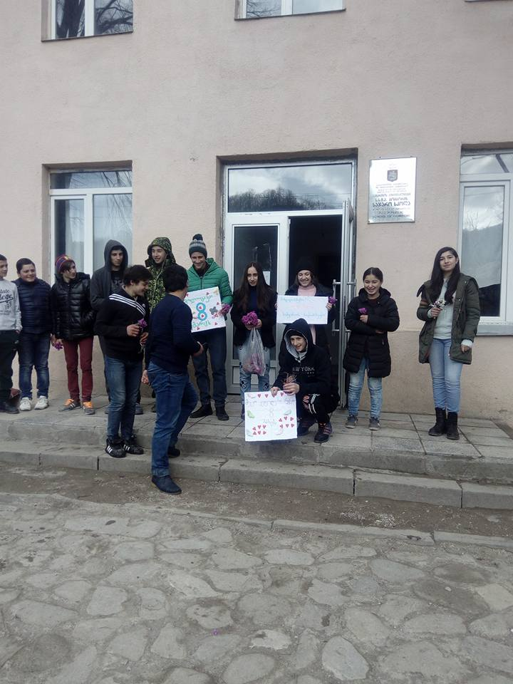
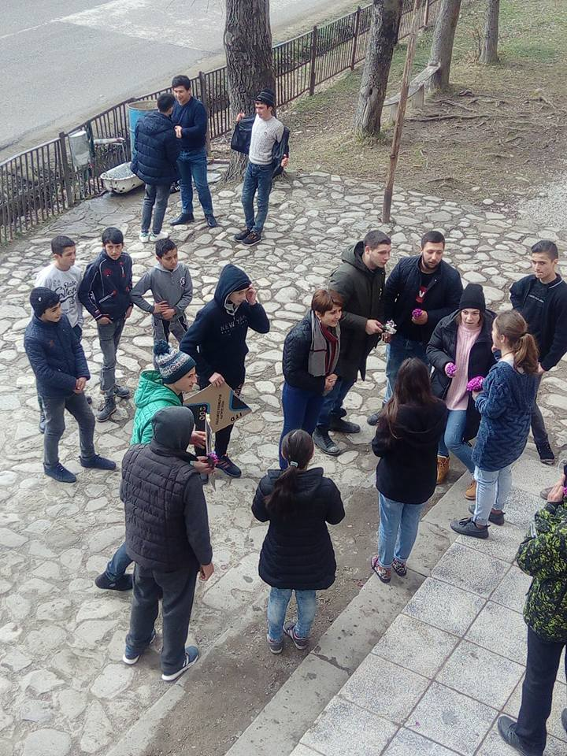
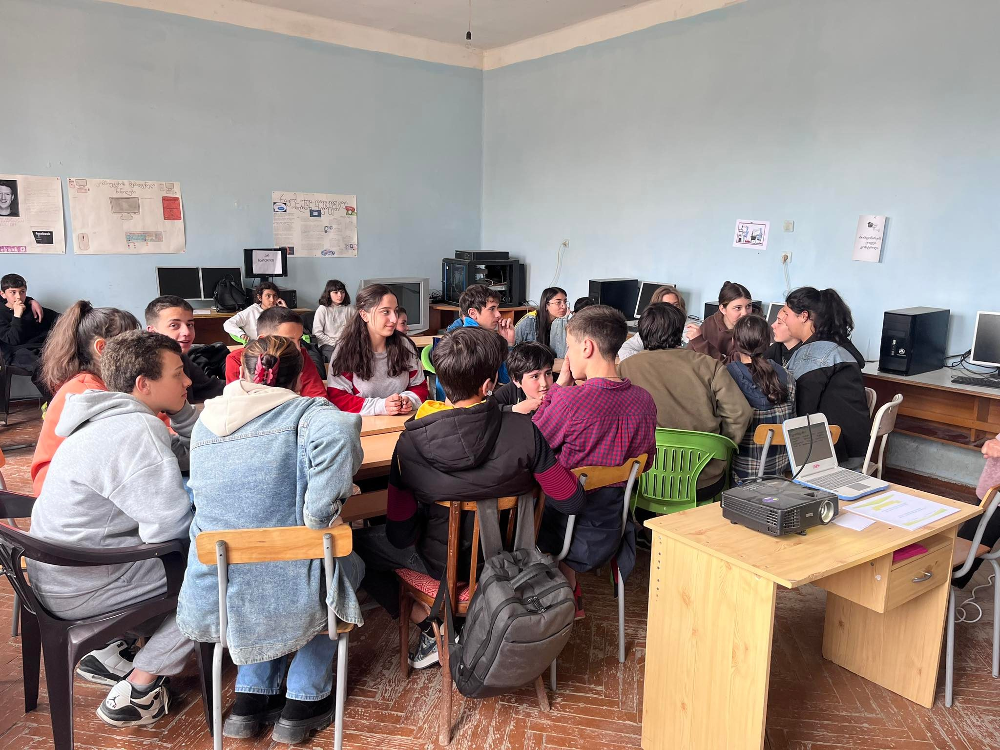

სკოლის ახალი ისტორია
ახლა გომბორის საჯარო სკოლაში აღარ არის ჯოხით დასჯის დისციპლინა, სკოლაში ბავშვების რაოდენობა შემცირდა, სოფელი დაიცალა და შესაბამისად სკოლასაც დაეტყო.
ადრე სამხედრო ნაწილი იყო, სადაც ძალიან ბევრი ხალხი ცხოვრობდა, ამიტომ იყო პარალელური კლასები.
საპჭოთა კავშირის დაშლის შემდეგ კეპეპეც დაიშალა. აღარ არის ინტერნატი, სადაც ჩამოსული ბავშვები რჩებოდნენ. სკოლის ბავშვებს ტრანსპორტი ემსახურება.
სკოლას ასევე ჰქონდა მუზეუმ, რომელმაც ჩვენამდე ვერ მოაღწია.


